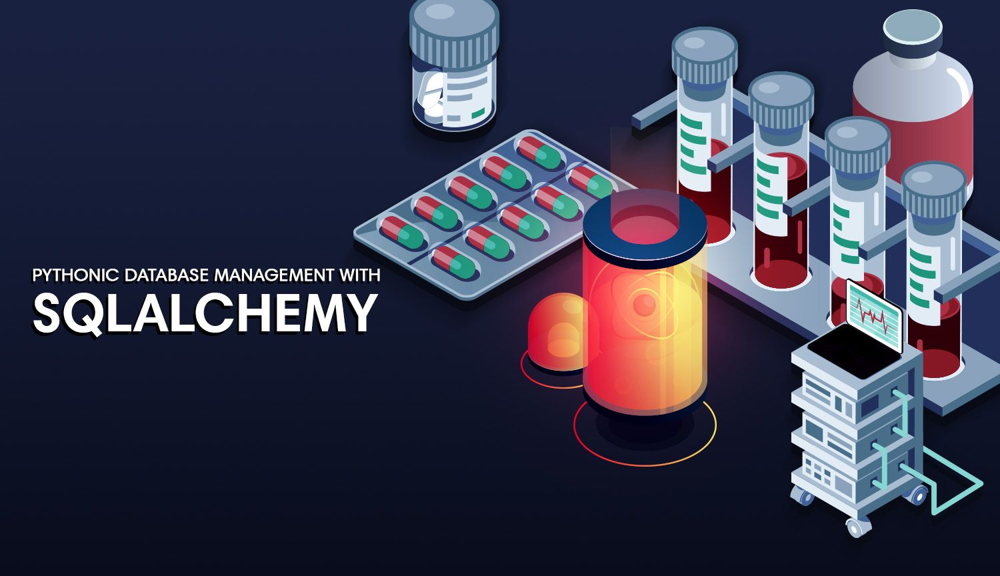

In this project, data cleaning, exploration and predictive analysis were carried out on a set of Employee data.
Some machine learning models were trained and the algorithms were implemented to forecast the ones with the most likelihood of attriting.

I implemented some data cleaning and exploration techniques on the bank's customer dataset.
I predicted applicants' qualification for a loan and went on to deploy the model into production through an API using Python and flask framework.
Pyspark is a powerful Python module that allows you to communicate using Apache Spark.
Spark includes a number of functionalities, such as Spark SQL as well as its Machine Learning Library.
In this project, I used PySpark to explore, clean and evaluate a bank dataset using
Binary Classification application with pyspark's Machine Learning Library (MLib) Pipelines API.
In this project, I requested for the most starred project on github as at the time of writing this.
This kind of request is called an API call.
The data is returned in JSON format and a visualization was done to show the number of stars on each github project.
In this project, I built a web server with Node.JS that feeds content through it, and also emits log events in a txt format
while implementing security enhancement.
In this project, I analysed a dataset that contains all of Udemy's courses classified into different subjects.
I utilised spark's mlib to train the model, after which it was tested with unknown data to classify the courses.
Propensity modelling in this project, attempts to predict the likelihood that visitors, leads and customers will
perform certain actions. It's a statistical approach that accounts for all the independent and
confounding variables that affect the said behavior.

In this project, I used SQLAlchemy, a library that makes it pretty easy to connect to SQL/ORM (Object Relational Mapping)
database in python with SQLite.
Note that SQLAchemy can be used with other database engines such as MySQL and PostgreSQL.
I implemented machine learning techniques to predict the quality of water.
Parameters like Ph value, conductivity, hardness, etc. were used to predict whether it's safe or unsafe for drinking.
Data flow diagrams, also known as DFD are used to graphically represent the flow of data
in a business information system. In this project, I created a three-level DFD for an
Library Management System which provides information about the outputs and inputs of each entity and the process itself.